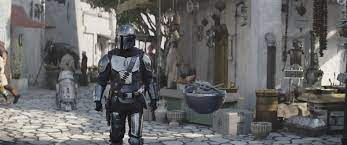
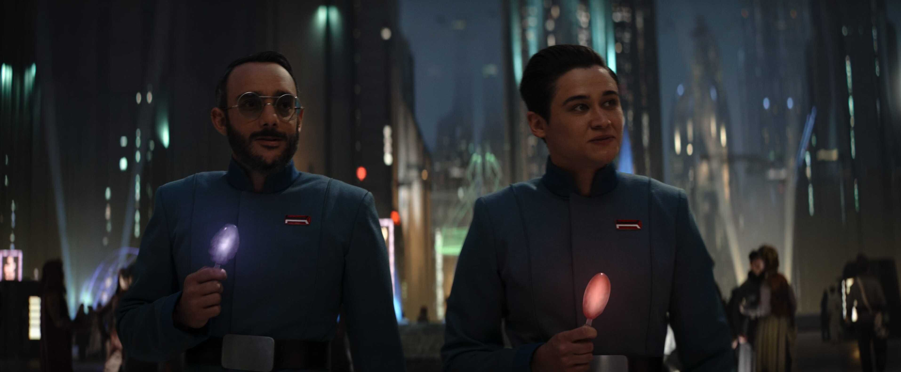
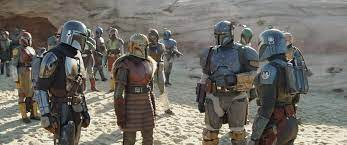
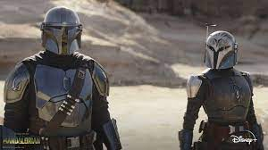
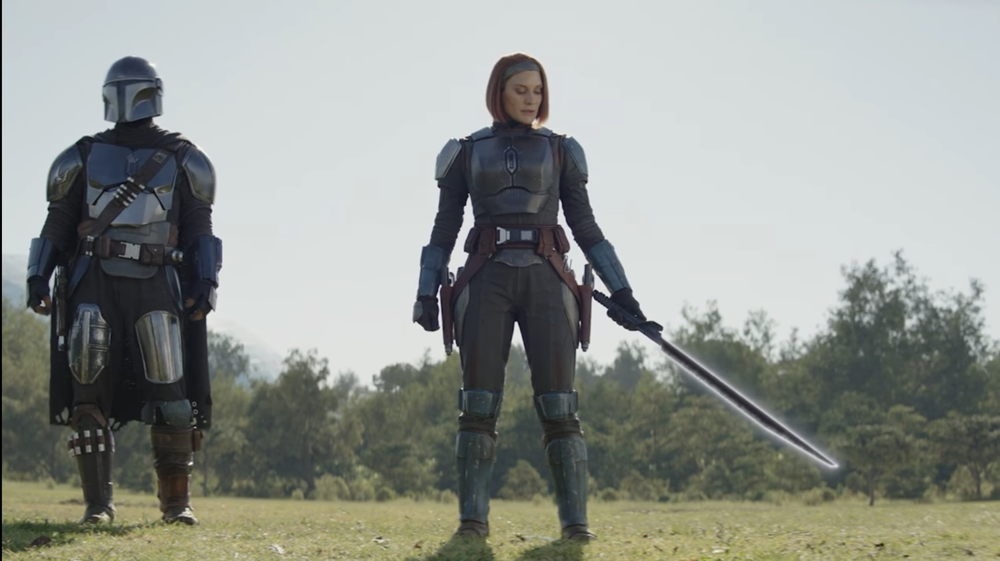
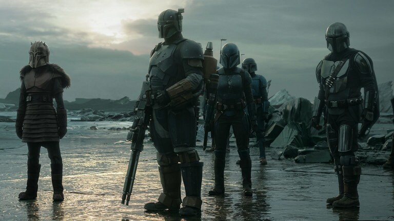
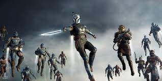

Saison 3
Episode 1 "L'Apostat"
{kind=link}
L'épisode commence avec une cérémonie d'intronisation mandalorienne sur une plage. Un adolescent mandalorien reçoit son casque de l'Armurière. Soudain, un énorme monstre marin émerge de l'eau, causant le chaos. Din Djarin arrive et parvient à abattre la créature pour sauver les mandaloriens. Il se rend ensuite à la forge de l'Armurière, où elle lui rappelle qu'il n'est plus considéré comme un mandalorien depuis qu'il a volontairement retiré son casque. Elle suggère que s'il veut trouver la rédemption, il doit se rendre sur la planète Mandalore et se baigner dans les "eaux vivantes" sous les mines, bien que la possibilité que cela fonctionne soit incertaine.
Din Djarin et Grogu se dirigent ensuite vers Nevarro, où Greef Karga est devenu le Haut Magistrat et a pacifié la planète. Ils aident à éliminer une bande de pirates et découvrent la statue du droïde IG-11, transformé en héros local. Din Djarin tente de le réactiver pour en faire son assistant, mais le droïde les attaque conformément à ses ordres d'origine. Ils l'amènent chez les Anzellans pour réparer son circuit mémoire, et Din Djarin part à la recherche de la pièce nécessaire.
Il retourne sur Nevarro, défait une escouade de pirates en orbite et atterrit sur la planète Mandalore, Kalevala, où Bo-Katan Kryze règne seule. Elle informe Din Djarin que Mandalore a été détruite, mais il insiste pour se rendre aux mines et découvrir si la planète est réellement contaminée. Bo-Katan le traite de fou mais lui indique l'emplacement des mines. Din Djarin s'apprête à poursuivre sa quête.
Episode 2 "Les Mines de Mandalore"

L'épisode commence avec Din Djarin et Grogu se rendant sur Tatooine pour retrouver Peli Motto, espérant qu'elle pourra les aider à réanimer le droïde IG-11. Les Jawas confirment que la carte mémoire nécessaire est introuvable. Peli Motto propose à Din Djarin d'acheter un droïde astromech de type R5-D4, même s'il semble peureux. Din Djarin accepte à contrecœur.
À bord de son chasseur N-1, Din Djarin se dirige vers le système de Mandalore, survolant la planète dévastée. Après un atterrissage, il envoie R5-D4 scanner la région, mais le droïde disparaît. Din Djarin entre dans une grotte et est attaqué par des Alamites, qu'il élimine avec le Sabre Noir. Il dépressurise son casque et constate que l'air de Mandalore est toujours respirable malgré la Purge.
Din Djarin et Grogu explorent les ruines de Sundari et descendent dans les mines. En descendant, il trouve un vieux casque de mandalorien au sol, mais il s'agit d'un piège. Une créature cyborg le capture et commence à prélever son sang. Din Djarin ordonne à Grogu de chercher de l'aide auprès de Bo-Katan Kryze. Grogu parvient à s'échapper avec l'aide de la Force, retourne sur Kalevala avec R5-D4 et alerte Bo-Katan.
Bo-Katan, Grogu, et R5-D4 se rendent à la rescousse de Din Djarin. Grogu guide Bo-Katan jusqu'à la grotte du cyborg, où elle récupère le Sabre Noir et tue la créature. Elle libère un Din Djarin affaibli. Bo-Katan propose à Din Djarin de retourner sur Kalevala pour se remettre, mais il refuse. Elle le guide vers les "eaux vivantes". Alors qu'il se baigne, Din Djarin fait un faux pas et coule vers le fond. Bo-Katan le sauve et remontant à la surface, elle aperçoit le Mythosaure, réalisant que les légendes de son enfance étaient basées sur la réalité.
Episode 3 "Le Converti"
{kind=link}
Din Djarin, secouru des eaux vivantes par Bo-Katan, récupère un échantillon de ces eaux pour prouver sa "rédemption". Bo-Katan, perturbée par la vision du Mythosaure, questionne Mando sur ce qu'il a vu, mais il prétend ne rien avoir observé. Ils retournent à Kalevala à bord du vaisseau de Bo-Katan et sont attaqués par des intercepteurs TIE. Bo-Katan largue Din Djarin sur son chasseur N-1, et ensemble, ils repoussent l'attaque des TIE. Cependant, des bombardiers TIE détruisent le palais de Bo-Katan. Ils parviennent à sauter dans l'hyperespace avant d'être submergés par la flotte ennemie.
Sur Coruscant, le docteur Pershing, qui tentait d'exploiter les midi-chloriens de Grogu sous les ordres de Moff Gideon, suit un programme de réhabilitation de la Nouvelle République. Il est reconnu par Elia Kane, une ancienne officier impériale. Elle le persuade de poursuivre ses recherches sur le clonage malgré l'interdiction de la Nouvelle République. Ils se rendent dans les chantiers navals impériaux pour récupérer les outils nécessaires. Cependant, ils sont arrêtés par les forces de l'ordre, et Pershing est soumis à un programme de "fouet mental" pour éliminer toute loyauté envers l'Empire.
Bo-Katan, Din Djarin, et Grogu atterrissent sur la planète-refuge de Bo-Katan. Ils rejoignent le clan mandalorien, et Din Djarin prouve sa rédemption en montrant l'échantillon des eaux vivantes. L'Armurière confirme qu'il s'est bien baigné dans les mines de Mandalore, mettant fin à son exil. Bo-Katan, qui a également plongé dans les eaux vivantes, est également admise au sein du clan. La cérémonie se termine par les félicitations des membres du clan.
Episode 4 "L’Orphelin"
{kind=link}
Sur leur planète-refuge, les Mandaloriens s'entraînent, y compris les enfants. Din Djarin veut que Grogu participe à un jeu des fléchettes contre un jeune Mandalorien nommé Ragnar. Grogu utilise la Force pour remporter la compétition, mais un monstre semblable à un Ptérosaure géant surgit, saisit Ragnar, et s'enfuit. Les Mandaloriens, dont Bo-Katan, Paz Vizsla, et Din Djarin, partent à sa poursuite, mais le monstre vole jusqu'à son nid sur un pic inaccessible. Bo-Katan tente de sauver l'enfant, mais le monstre les empêche d'atteindre son nid.
Pendant ce temps, l'Armurière fabrique une pièce d'armure pour Grogu, ornée du symbole du Mudhorn, et le petit être revit des flashbacks douloureux liés à son évacuation du Temple Jedi lors de l'ordre 66. Les Mandaloriens, de retour à leur campement, planifient la récupération de l'enfant. Bo-Katan, Paz Vizsla, et Din Djarin montent une expédition vers le pic en question, sachant qu'ils ne peuvent utiliser leurs jetpacks sans se faire repérer.
Dans le nid, Din Djarin repère une source de chaleur, que Paz Vizsla pense être son fils. Cependant, il s'agit des bébés du monstre, et ce dernier apparaît, engloutissant l'un des bébés et capturant Paz Vizsla. Le monstre s'envole, poursuivi par les Mandaloriens, mais finit par relâcher Paz Vizsla et le bébé. Un combat aérien s'engage, et le monstre est finalement englouti par une créature plus grande dans un lac.
Bo-Katan et l'escouade reviennent au campement avec Ragnar et les bébés monstres. L'Armurière fabrique une nouvelle épaulette pour Bo-Katan et révèle qu'elle a vu Din Djarin lors de sa remontée des eaux vivantes sous les mines de Mandalore. L'Armurière déclare : « Telle est la voie. »
Episode 5 "Le Pirate"
{kind=link}
Le Roi Pirate Gorian Shard menace la ville principale de Nevarro, dirigée par le Haut Magistrat Greef Karga. Shard exige la reddition de Karga, menaçant de détruire la ville. Karga, sous la protection présumée de la Nouvelle République, envoie un message de détresse au capitaine Teva de la flotte de X-Wings de la Nouvelle République. Cependant, Elia Kane, une ancienne officière impériale amnistiée, intervient dans la discussion et s'oppose à une intervention en faveur de Nevarro.
Teva se rend sur la planète-refuge des Mandaloriens, dirigée par Din Djarin, et relaie le message de détresse de Karga. Il tente également d'alerter sur la menace émergente de l'Empire. Din Djarin décide de venir en aide à Greef Karga, et le clan mandalorien, dirigé par Bo-Katan, s'unit à la cause.
Le clan mandalorien se dirige vers Nevarro à bord du vaisseau de Bo-Katan. Din Djarin, à bord de son chasseur N-1, attaque le vaisseau de Gorian Shard. Une bataille intense s'ensuit, avec des combats aériens et des affrontements au sol. Vane, un chasseur de Shard, confronte Din Djarin. Pendant ce temps, Bo-Katan dépose les Mandaloriens au sol pour affronter les pirates.
Malgré des embuscades et des combats difficiles, les Mandaloriens, avec l'aide de Bo-Katan, parviennent à vaincre les pirates. Vane prend la fuite, abandonnant Gorian Shard. Bo-Katan et Din Djarin détruisent le vaisseau pirate, tuant Shard et les pirates à bord. En remerciement, Greef Karga offre aux Mandaloriens des terres sur Nevarro pour s'y établir légalement.
De retour dans la forge, l'Armurière demande à Bo-Katan de retirer son casque, expliquant que la vision du Mythosaure marque le début d'une nouvelle ère. Elle charge Bo-Katan de réunifier les Mandaloriens, y compris ceux qui ont divergé du credo. Bo-Katan se présente devant les membres du clan, visage découvert, acceptant la responsabilité de mener Mandalore vers l'unité.
Dans l'espace, le capitaine Teva repère une navette détruite qui transportait Moff Gideon, le prisonnier, et suspecte la présence d'un Mandalorien.
Episode 6 "Les Mercenaires"
{kind=link}
L'armée des Mandaloriens dirigée par Axe Woves agit désormais comme une compagnie de mercenaires à travers la galaxie, utilisant la flotte impériale qu'ils ont précédemment volée sous les ordres de Bo-Katan. Ils accomplissent des missions diplomatiques, comme celle consistant à ramener un prince Mon Calamari sur la demande de son père souverain. Bo-Katan, Din Djarin, et Grogu atterrissent sur la planète Plazir-15 où ils cherchent à rencontrer le groupe d'Axe Woves.
Ils sont accueillis par le Capitaine Bombardier et la Duchesse, les maîtres de Plazir-15, qui leur demandent de régler un problème avec d'anciens droïdes impériaux et séparatistes reprogrammés. Une enquête révèle une corruption du lubrifiant Népenthès, nécessaire au fonctionnement des droïdes, introduite par le Commissaire Helgait, un séparatiste infiltré en tant que chef de la sécurité. Bo-Katan et Din Djarin le neutralisent et le présentent à la Duchesse.
En remerciement, la Duchesse remet les clés de Plazir-15 à Bo-Katan, et Grogu est fait chevalier. Ils se rendent ensuite au groupe d'Axe Woves, où Bo-Katan défie Woves en combat singulier pour le leadership de la flotte et remporte la victoire. Cependant, Woves conteste sa légitimité en l'absence du Sabre Noir, l'arme symbolique du dirigeant mandalorien. Din Djarin intervient en rappelant comment Bo-Katan avait utilisé le Sabre Noir pour le libérer de l'emprise d'un cyborg sur Mandalore. Din Djarin remet solennellement le Sabre Noir à Bo-Katan, reconnaissant ainsi sa légitimité en tant que dirigeante mandalorienne.
Episode 7 "Les Espions"
{kind=link}
Elia Kane, l'espionne du Moff Gideon, révèle le succès de Bo-Katan Kryze et des Mandaloriens contre les pirates sur Nevarro, informant Gideon que la Nouvelle République n'est pas responsable de la défaite des pirates, mais plutôt les Mandaloriens. Gideon participe à une réunion virtuelle du Conseil de L'Ombre, composé d'anciens commandants de l'armée impériale. Il s'interroge sur l'absence du Grand Amiral Thrawn et suggère que le Conseil devrait choisir un nouveau leader. Le commandant Brendol Hux mentionne le Projet Nécromancien comme une solution. Gideon rapporte que les Mandaloriens sont devenus une menace qu'il faut éliminer, et le Conseil convient de lui envoyer des renforts.
Bo-Katan et les Mandaloriens, avec la flotte mandalorienne récupérée, arrivent au-dessus de Nevarro. Din Djarin reçoit un cadeau de Greef Karga : le droïde IG-11, aménagé par les Anzellans et renommé IG-12, équipé d'un poste de pilotage pour Grogu. Réunis sous la bannière de Bo-Katan, les Mandaloriens, avec elle désormais propriétaire du Sabre Noir, décident de reconquérir Mandalore. Ils descendent sur la planète en éclaireurs, avec Bo-Katan, Din Djarin, Grogu, Paz Vizsla, l'Armurière, Axe Woves et Koska Reeves.
Ils repèrent un vaisseau à voile mené par des survivants mandaloriens qui n'avaient jamais quitté la planète. À bord, ils se dirigent vers la Grande Forge, mais sont attaqués par une créature monstrueuse émergeant du sol, détruisant le vaisseau. Se réfugiant dans une caverne, ils atteignent la Grande Forge, éteinte. Cependant, ils sont attaqués par des soldats impériaux équipés de jetpacks et d'armures en beskar. Après les avoir repoussés, ils découvrent une base impériale souterraine. Poursuivant les Impériaux, ils tombent dans un piège et Din Djarin se retrouve isolé. Moff Gideon apparaît et capture Din Djarin, déclarant qu'il est le futur de Mandalore. Bo-Katan et les autres parviennent à découper un passage pour s'échapper, laissant Paz Vizsla pour les couvrir.
Paz Vizsla, resté en arrière, se bat héroïquement contre les forces impériales, mais est finalement tué par trois gardes prétoriens équipés de Vibrolames.
Episode 8 "Le Retour"
{kind=link}
Le groupe dirigé par Bo-Katan Kryze échappe aux attaques de la flotte impériale grâce aux avertissements d'Axe Woves, qui sacrifie son vaisseau amiral en l'écrasant sur la base secrète de Moff Gideon. Din Djarin, libéré par IG-12/Grogu, se met en route pour trouver Moff Gideon et l'éliminer. Avec l'aide de R5-D4, il parvient à localiser le poste de commandement de Gideon.
Din Djarin pénètre dans la base et affronte les troupes impériales. Il découvre des cuves contenant des clones de Gideon et les détruit. Le groupe de Bo-Katan arrive dans un espace de verdure sous-terrain, une des fermes où survivent les habitants de Mandalore.
Les Mandaloriens, renforcés par leurs troupes en orbite, entrent dans la base pour affronter l'armée de Gideon. Din Djarin affronte Gideon dans la salle de commande, tandis que Bo-Katan s'attaque à lui. Les gardes prétoriens interviennent, mais Grogu utilise la Force pour les repousser. Gideon prend l'avantage sur Bo-Katan, détruisant le Sabre Noir, mais Mando intervient. La salle de commande est le théâtre d'un combat acharné, et Axe Woves dirige le vaisseau-amiral vers la base, provoquant une explosion massive qui emporte Gideon.
La victoire est remportée, les Mandaloriens reprennent Mandalore. Bo-Katan réactive symboliquement la Grande Forge, et Din Djarin adopte officiellement Grogu. Ils partent à l'aventure ensemble. Ils se rendent à la base Adelphi de la Nouvelle République, où Din Djarin recrute le capitaine Carson Teva comme chasseur de primes. Ils se posent ensuite sur Nevarro, où Greef Karga leur offre un terrain et une maison en remerciement. En retour, Din Djarin offre à Nevarro un nouveau droïde IG-11 pour protéger la population. La série se conclut sur une note positive, avec Din Djarin et Grogu prêts à poursuivre leurs aventures dans la galaxie.